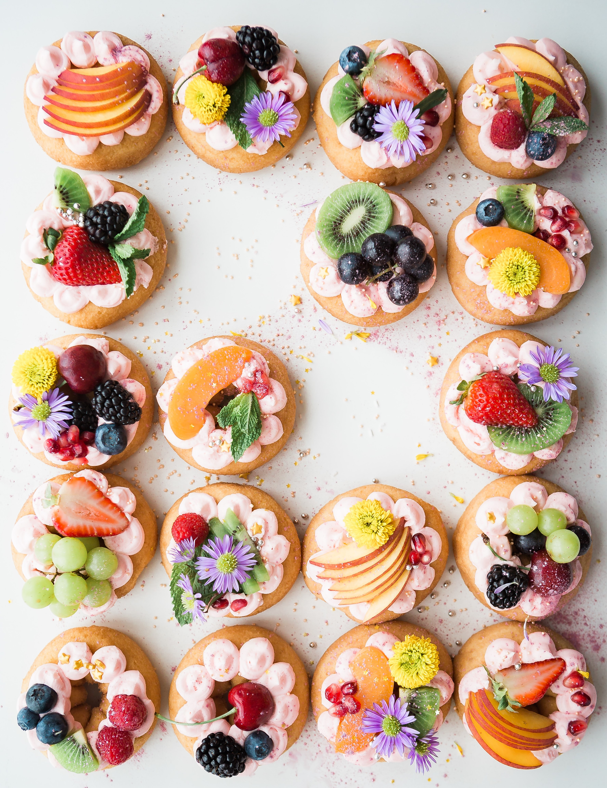

I LOVE SWEETS!
디저트는 프랑스어로는 "식사를 끝마치다", "식탁 위를 치우다" 라는 뜻을 가지고 있습니다.
후식(後食) 또는 디저트(dessert)란 음식을 먹고 난 뒤 입가심으로 먹는 것으로, 여러 종류가 있습니다.
정확한 유래는 알려지지 않았으나,
오래전부터 밥을 먹은 후에 약간 모자란 음식의 양을 채우기 위해
달콤한 음식으로 식사의 끝을 맺은 것이 시초가 된 것으로 추정됩니다.
종류로는 아이스크림류, 베이커리류, 과자류, 냉과류, 차류가 있습니다.
